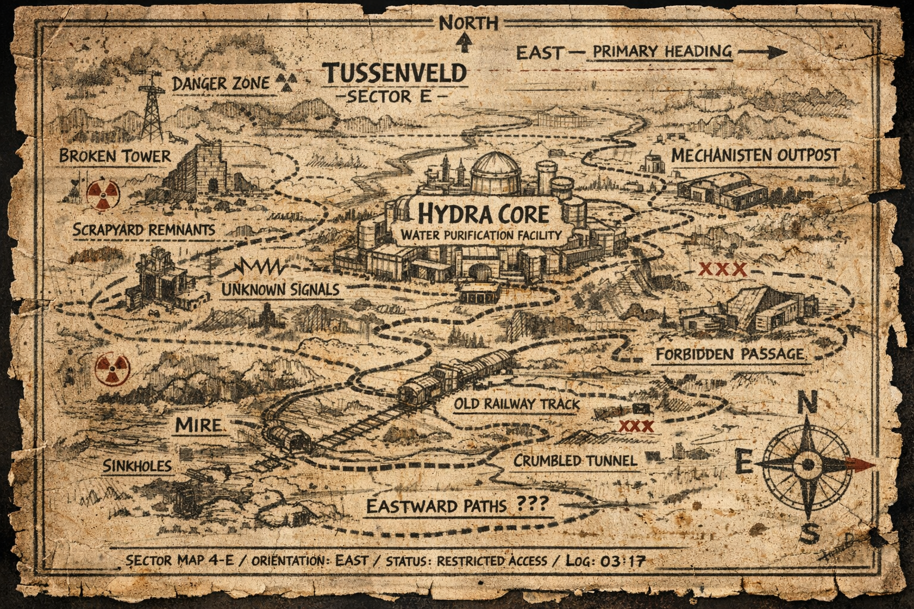

Jan Wandelaar Challenge
Een filmische tocht waarin speurtocht, escaperoom en break-in box samenkomen.
Avonturen die je niet leest, maar beleeft.
Tochten waarin verhalen, puzzels en keuzes zich onderweg ontvouwen.

Een filmische tocht waarin speurtocht, escaperoom en break-in box samenkomen.